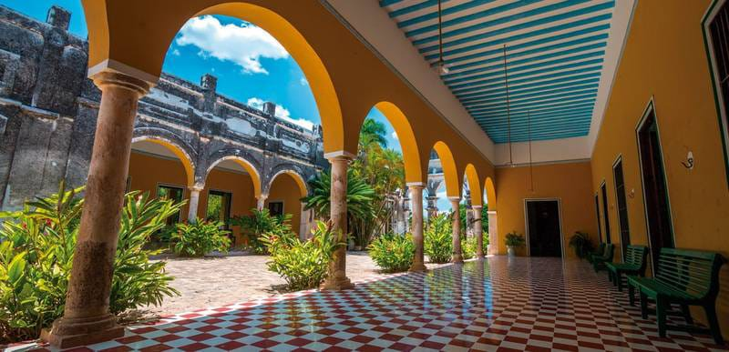
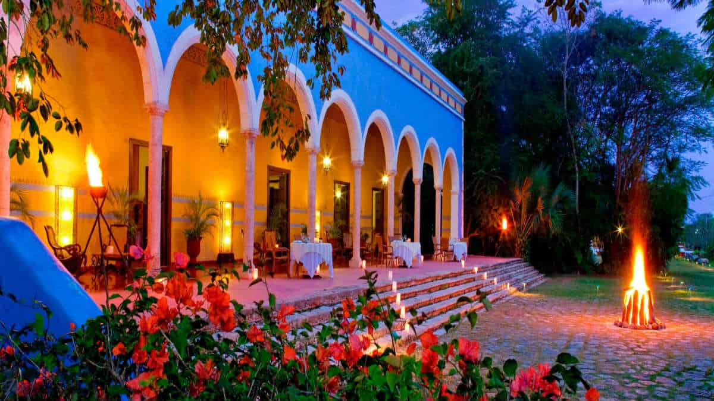
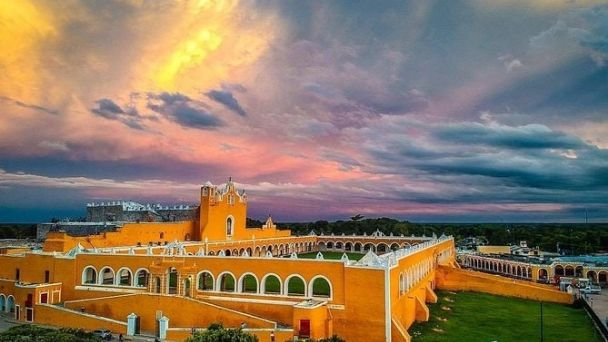
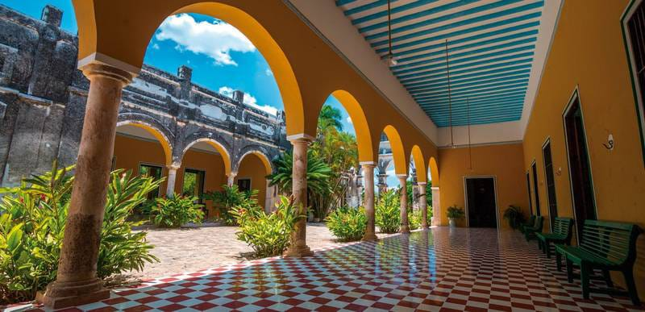
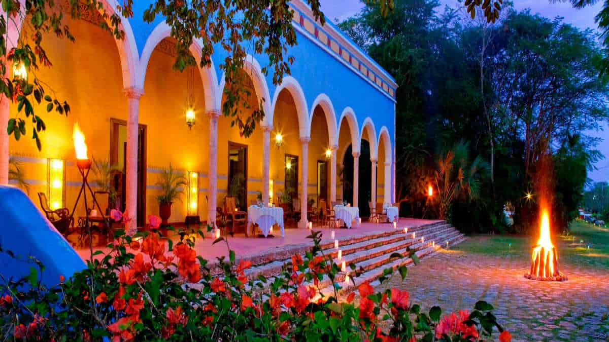

RIQUEZAS CULTURALES
Yucatán
es un estado sumamente rico en cuanto a cultura, ya que fue cuna de una
de las civilizaciones más avanzadas y sorprendentes de su tiempo: la
civilización maya, cuyos elementos perduran en el estado a través de
numerosas tradiciones, así como de sus majestuosas zonas
arqueológicas. Por otro lado, Yucatán también cuenta con bellas
ciudades coloniales; y con haciendas que en un tiempo fueron sede del
cultivo del henequén y que actualmente fueron remozadas, en las cuales
los turistas pueden hospedarse o disfrutar de la exquisita gastronomía
yucateca.
Yucatán también es rico en actividades culturales, pues alberga diversos museos, teatros y centros culturales, en los que se puede disfrutar de exposiciones fotográficas, muestras de cine de arte, interpretaciones de la sinfónica, presentaciones de libros y de obras de teatro y eventos musicales y de danza, entre otros.
Algunas de las principales riquezas culturales de nuestro estado son:
Yucatán también es rico en actividades culturales, pues alberga diversos museos, teatros y centros culturales, en los que se puede disfrutar de exposiciones fotográficas, muestras de cine de arte, interpretaciones de la sinfónica, presentaciones de libros y de obras de teatro y eventos musicales y de danza, entre otros.
Algunas de las principales riquezas culturales de nuestro estado son:


Zonas arqueológicas:


 
Considerada
como la región más importante del mundo maya, Yucatán cuenta con una
gran cantidad de sitios arqueológicos, algunos de los cuales, por su
importancia e imponente belleza, atraen a miles de visitantes cada año.
Chichen Itzá: Considerada
una de las más importantes capitales de la cultura Maya, ya ha sido
declarada Patrimonio de la Humanidad por la UNESCO y recientemente fue
declarado una de las siete maravillas del mundo moderno. En este
sitio se puede observar el monumental Castillo, en el que todos los
años ocurre un fenómeno natural durante el equinoccio de primavera, de
manera que la luz del sol crea una sombra de una serpiente
emplumada descendiendo de las escalinatas de la pirámide. En esta
zona se encuentra también el imponente Observatorio, el Cenote Sagrado
y la cancha de juego de pelota más grande descubierta en Mesoamérica.
Uxmal:
Ubicado
a 62 Km. de la ciudad de Mérida, Uxmal sobresale por el tamaño y
decoración de sus edificaciones; sus grabados en piedra, frisos,
explanadas y juego de pelota, hacen de esta ciudad un lugar único. La
pirámide del adivino es la que más sobresale entre las edificaciones,
con 35 metros de altura. Junto con Chichén Itzá, Uxmal ya ha sido
también declarado patrimonio de la humanidad por la UNESCO.ñ
Dzibilchaltún: Situada
al norte de Mérida, es una de las más antiguas ciudades mayas. Su
estructura más importante es el Templo de las Siete Muñecas, en el
cual se presenta un importante fenómeno natural durante el equinoccio:
al salir el sol, éste pasa exactamente por el centro del tempo, dando
lugar a un espectáculo majestuoso.

Ciudades coloniales:
Yucatán
es uno de los estados del país que fue colonizado por los españoles,
por lo que cuenta con una gran riqueza arquitectónica de estilo
colonial. En este sentido, destacan por su belleza las ciudades
de Mérida, Valladolid e Izamal.
 
o
Haciendas:
Construidas
entre los siglos XV y XVII, estas joyas arquitectónicas albergaron el
proceso productivo de transformación del henequén, el cual fue la base
de la economía yucateca por décadas enteras. En el estado existen
alrededor de 392 haciendas, muchas de las cuales han sido remozadas y
actualmente ofrecen al visitante un ambiente único, existiendo en
algunos casos la opción de hospedarse en ellas, de disfrutar la
deliciosa gastronomía yucateca o de realizar recorridos para conocer
más sobre cómo era el modo de producción del henequén en el pasado.
Yucatán
es un estado sumamente rico en cuanto a cultura, ya que fue cuna de una
de las civilizaciones más avanzadas y sorprendentes de su tiempo: la
civilización maya, cuyos elementos perduran en el estado a través de
numerosas tradiciones, así como de sus majestuosas zonas
arqueológicas. Por otro lado, Yucatán también cuenta con bellas
ciudades coloniales; y con haciendas que en un tiempo fueron sede del
cultivo del henequén y que actualmente fueron remozadas, en las cuales
los turistas pueden hospedarse o disfrutar de la exquisita gastronomía
yucateca.
Yucatán también es rico en actividades culturales, pues alberga diversos museos, teatros y centros culturales, en los que se puede disfrutar de exposiciones fotográficas, muestras de cine de arte, interpretaciones de la sinfónica, presentaciones de libros y de obras de teatro y eventos musicales y de danza, entre otros.
Yucatán también es rico en actividades culturales, pues alberga diversos museos, teatros y centros culturales, en los que se puede disfrutar de exposiciones fotográficas, muestras de cine de arte, interpretaciones de la sinfónica, presentaciones de libros y de obras de teatro y eventos musicales y de danza, entre otros.
Zonas arqueológicas:
Considerada
como la región más importante del mundo maya, Yucatán cuenta con una
gran cantidad de sitios arqueológicos, algunos de los cuales, por su
importancia e imponente belleza, atraen a miles de visitantes cada año.
Chichen Itzá:
Considerada
una de las más importantes capitales de la cultura Maya, ya ha sido
declarada Patrimonio de la Humanidad por la UNESCO y recientemente fue
declarado una de las siete maravillas del mundo moderno. En este
sitio se puede observar el monumental Castillo, en el que todos los
años ocurre un fenómeno natural durante el equinoccio de primavera, de
manera que la luz del sol crea una sombra de una serpiente
emplumada descendiendo de las escalinatas de la pirámide. En esta
zona se encuentra también el imponente Observatorio, el Cenote Sagrado
y la cancha de juego de pelota más grande descubierta en Mesoamérica.
Uxmal:
Ubicado
a 62 Km. de la ciudad de Mérida, Uxmal sobresale por el tamaño y
decoración de sus edificaciones; sus grabados en piedra, frisos,
explanadas y juego de pelota, hacen de esta ciudad un lugar único. La
pirámide del adivino es la que más sobresale entre las edificaciones,
con 35 metros de altura. Junto con Chichén Itzá, Uxmal ya ha sido
también declarado patrimonio de la humanidad por la UNESCO.
Dzibilchaltún:
Situada
al norte de Mérida, es una de las más antiguas ciudades mayas. Su
estructura más importante es el Templo de las Siete Muñecas, en el
cual se presenta un importante fenómeno natural durante el equinoccio:
al salir el sol, éste pasa exactamente por el centrdel tempo, dando
lugar a un espectáculo majestuoso.